Fig 1: Ventana Entrenamientos
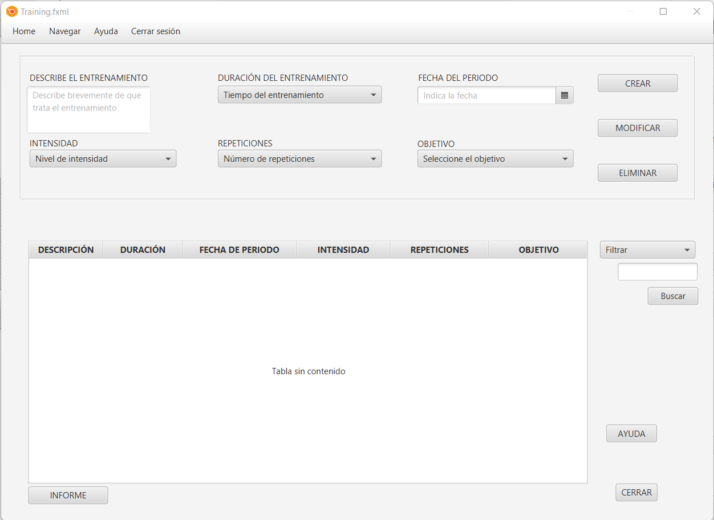Al iniciar como administrador, la ventana estará totalmente habilitada y visible para realizar el correspondiente 'CRUD'.
Fig 2: Entrada como administrador
Al entrar como administrador y rellenar los campos previamente vacios, los botones estaran activados, permitiendo así la funcionalidad de la ventana.
Fig 3: Creando un Entrenamientos
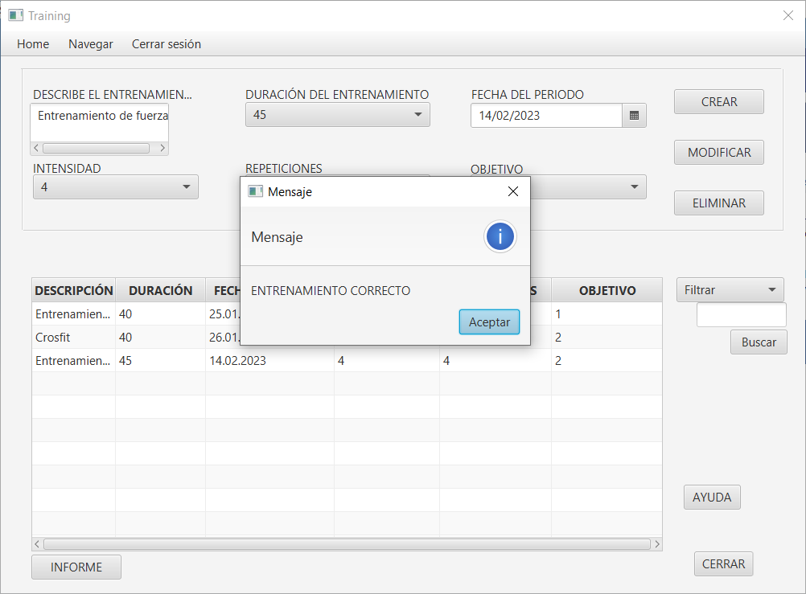Si los campos han sido valorados de forma correcta (en caso contrario saldrá una ventana indicando del error) el entrenamiento que usted
ha introducido saldrá en la tabla de forma correspondiente con los datos.
Fig 4: Rellenar los datos seleccionando un elemento
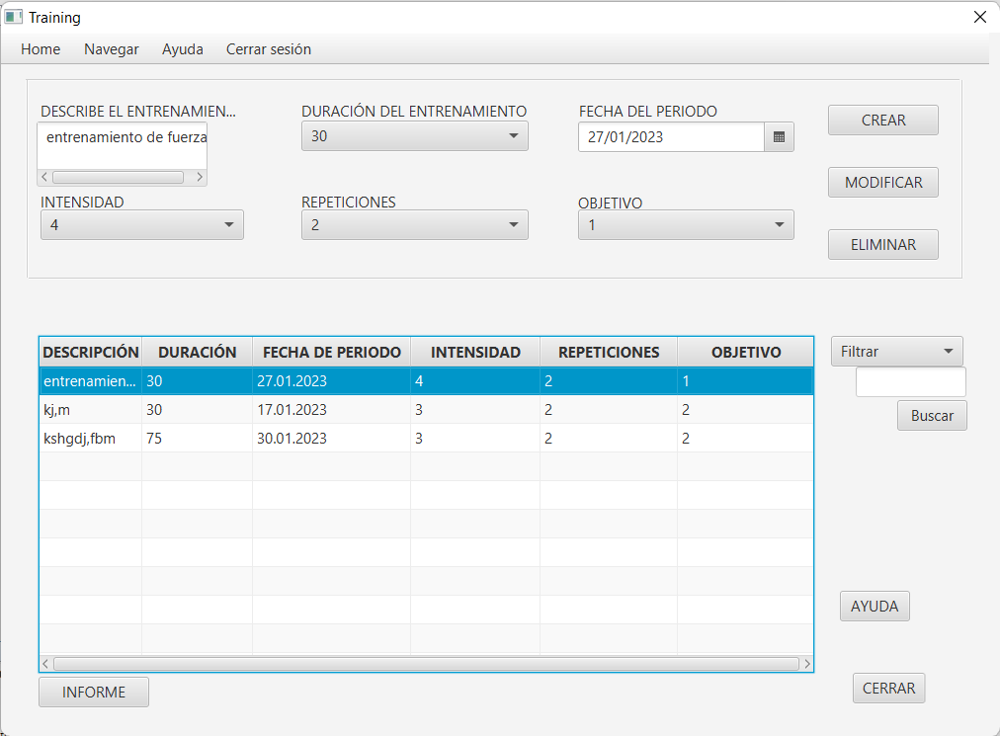Al escoger un elemento de la tabla los datos característicos de esta se marcarán en su campo correspondiente, permitiendo el borrado y la modificación de estos.
Fig 6: Modificado
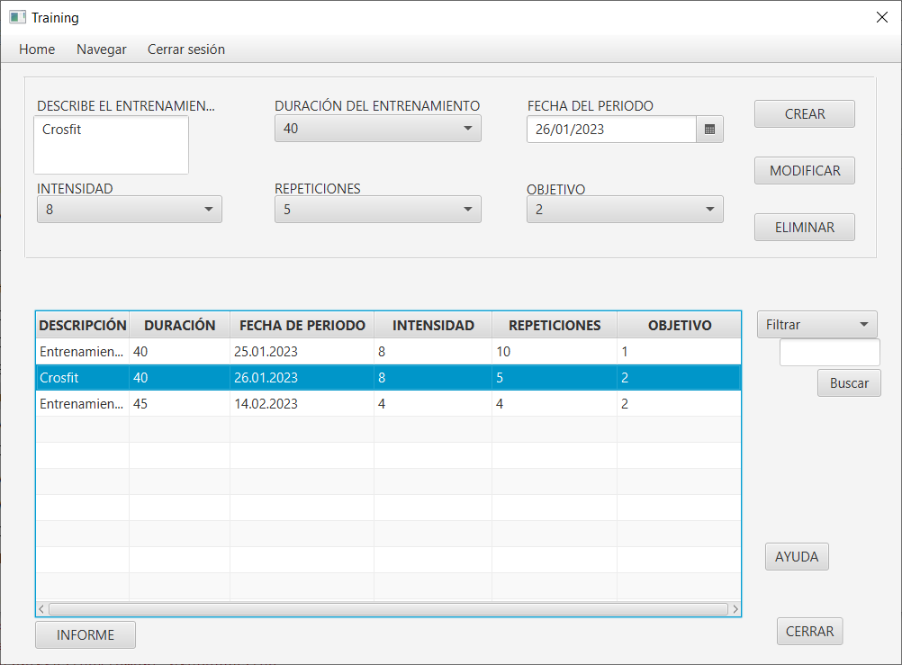Modificar tiene un procedimiento similar a borrado, para modificar debemos de elegir el entrenamiento que queremos modificar, una vez elegido en los parametros de arriba debemos de cambiar el elemento del entrenamiento a cambiar, al pulsar modificar si los datos están validados la ventana mostrará el entrenamiento con el entrenamiento modificado, en caso contrario saldrá una ventana de error y podrás intentarlo otra vez.
Fig 6.1: Fíjate en los datos bien
Fig 6.2: Modificado hecho
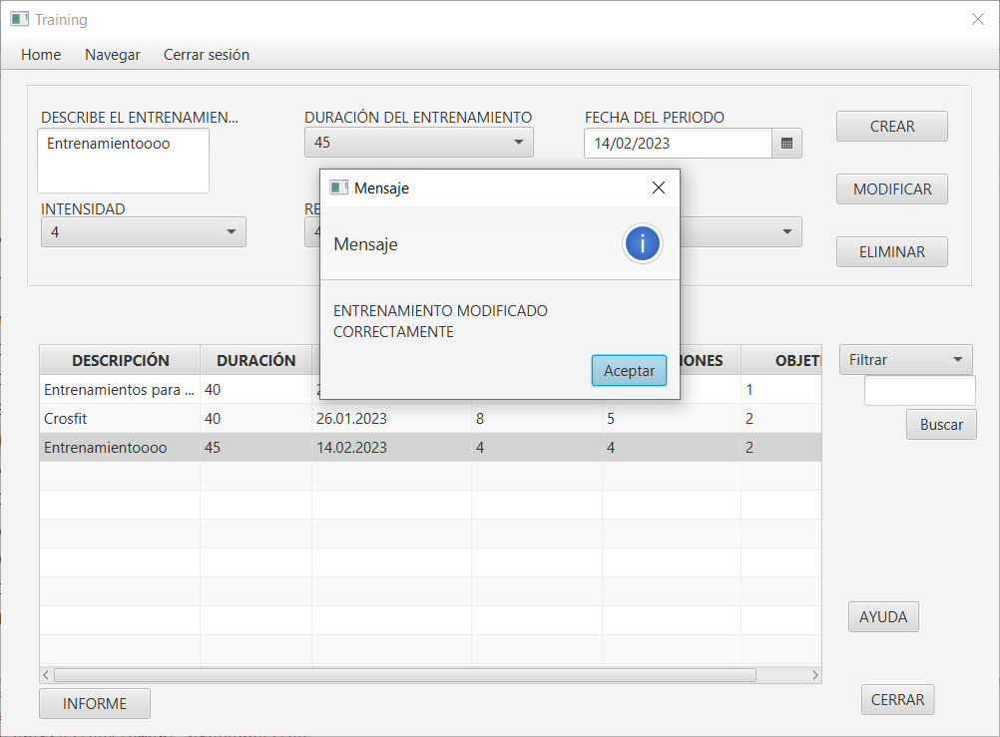Fig 7: Confirmación de borrado
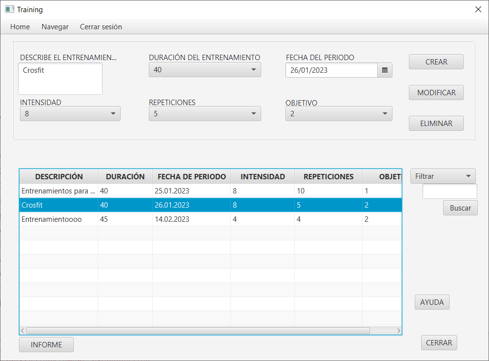Como en la modificacion al pulsar sobre una de las filas de la tabla, se rellenaran los datos en sus correspondientes opciones. Al pulsar borrado saldrá una ventana pidientote si en verdad quieres borrar el entrenamiento selecionado o no, si pulsas sí comprobará los datos y en caso de ser incorrectos saldrá un error y podrás volver a intentarlo otra vez. Si los datos son correctos el mensaje se borrará como se muestra aquí:
Fig 7.2: Borrado
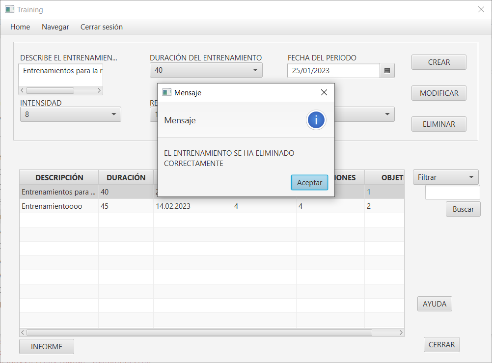Fig 8: Entrada como usuario
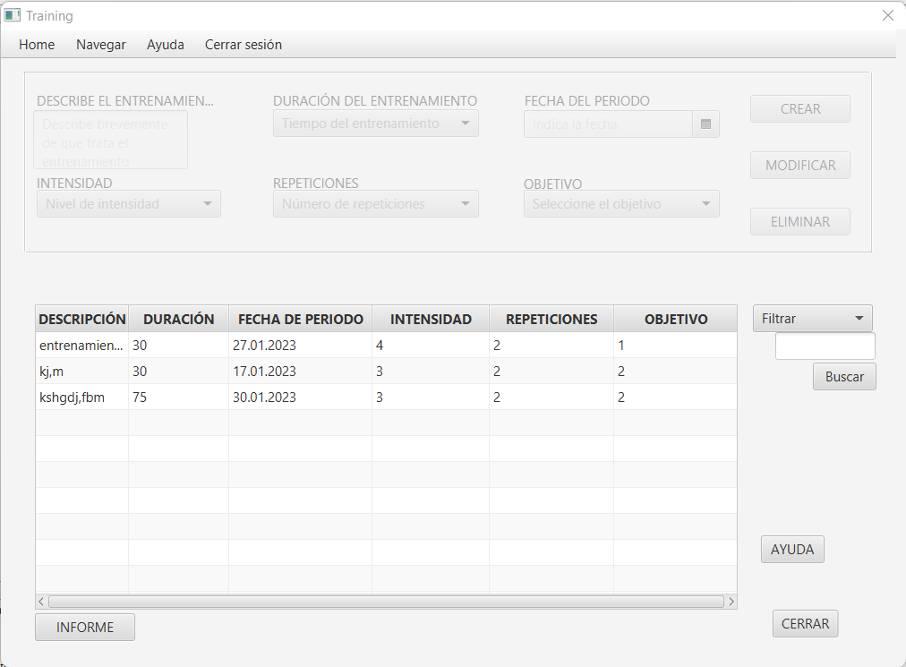Al entrar como usuario, el panel superior estara deshabilitado y su uso se limita a visualizar la tabla, poder filtrar y sacar un informe.
Fig 9: Filtrados
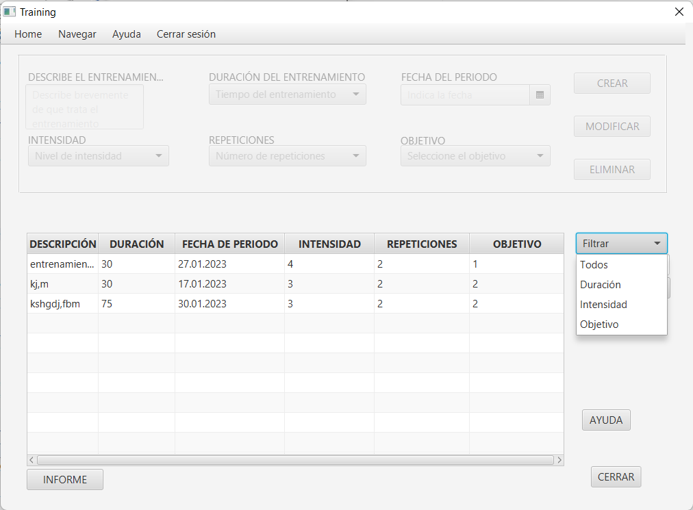Esta ventana tiene 3 posibles opciones de filtrado: Por duracion del entrenamiento, por la intensidad, por el id del objetivo y mostrar todos los objetivos, vamos a enfocarnos en el de por valor de parametro:
Fig 10: Filtrado por duracion
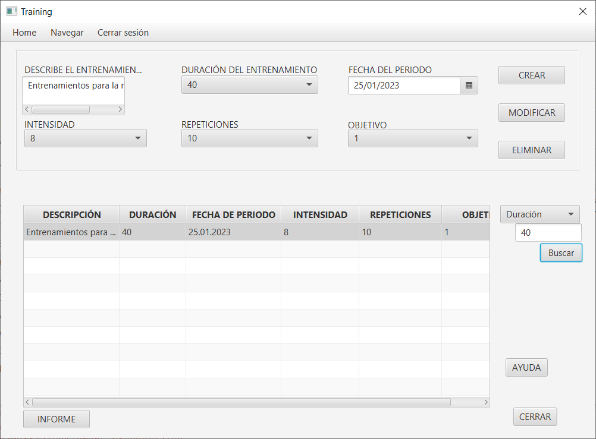Si buscamos uno de los valores por duracion de la tabla nos saldrá el entrenamientp, si no sale nos devolverá la tabla vacia, indicando que no hay valores por la duración indicada. Para volver a ver todos los entrenamiento debemos de escoger la opción todos los entrenamientos.
Fig 10.1: Filtrado por intensidad
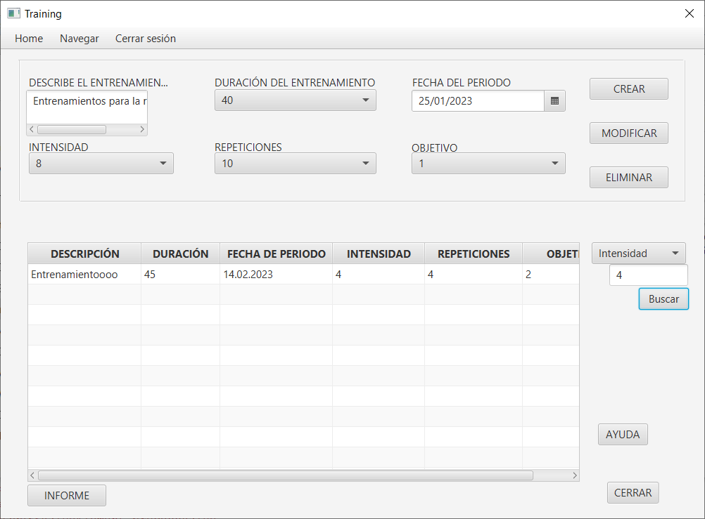Si buscamos uno de los valores por la inetnsidad del entrenamiento de la tabla nos saldrá el entrenamiento, si no sale nos devolverá la tabla vacia, indicando que no hay valores por la inetensidad indicada. Para volver a ver todos los entrenamiento debemos de escoger la opción todos los entrenamientos
Fig 10.2: Filtrado por id de objetivo
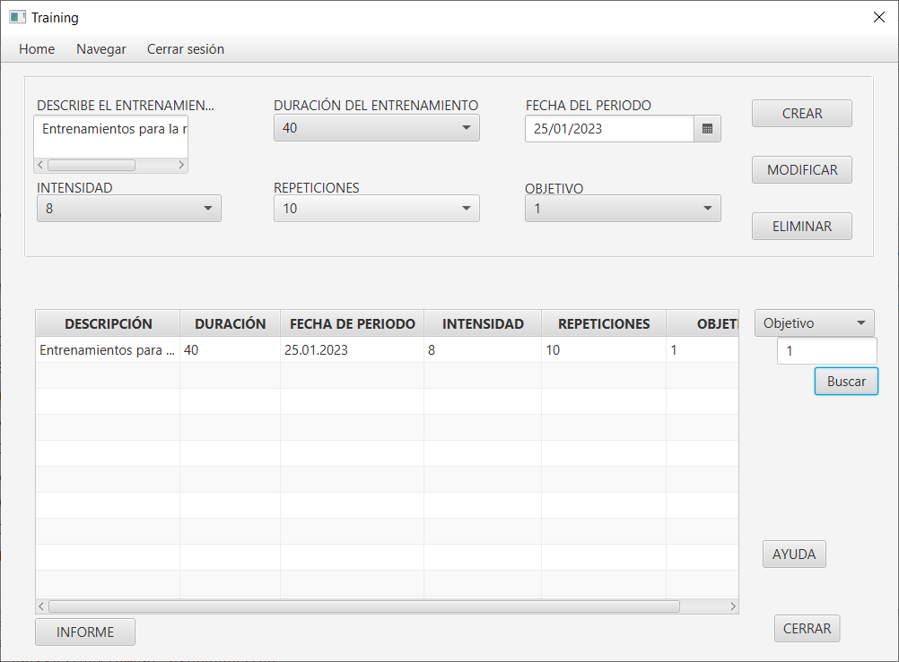Si buscamos uno de los valores por id de objetivo de la tabla nos saldrá el entrenamiento, si no sale nos devolverá la tabla vacia, indicando que no hay valores por el id del objetivo. Para volver a ver todos los objetivos debemos de escoger la opción todos los objetivos
Fig 10.3: Filtrado para volver a todos
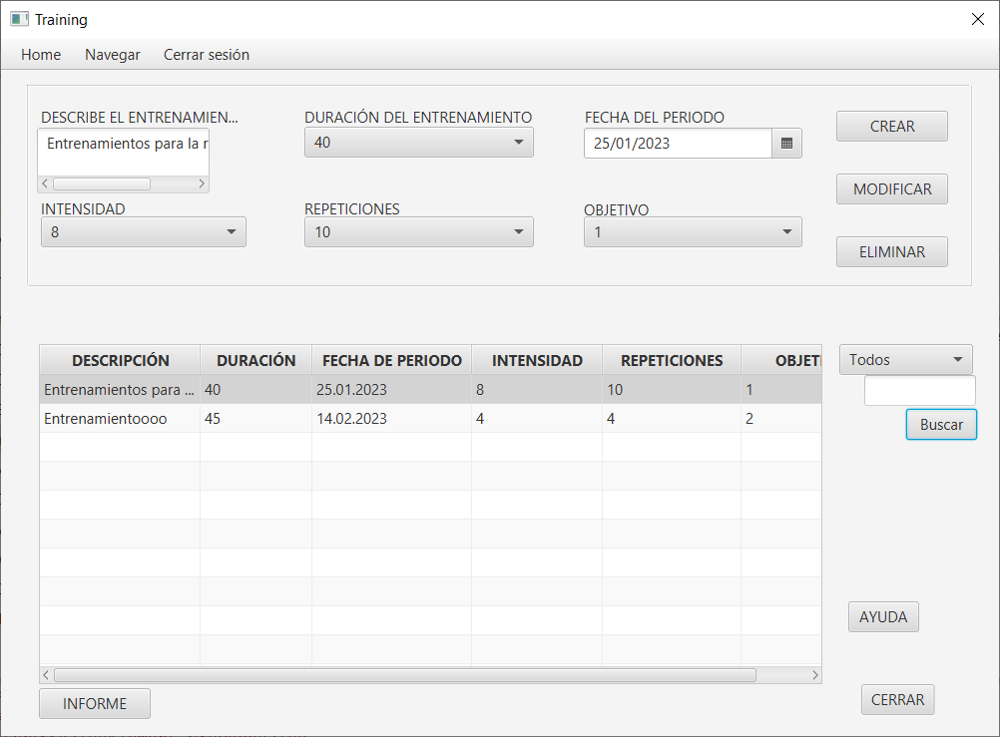Si buscamos por todos los entrenamientos de la tabla nos saldrán, si no sale nos devolverá la tabla vacia.
Fig 11: Informe
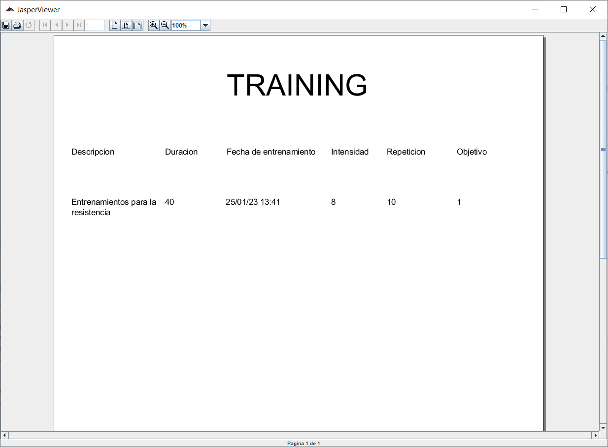Si pulsamos el botón de informe de la ventana de entrenamiento saldrá una ventana emergente con un informe de jasperreports, mostrando la info de la tabla de entrenamiento detalladamente, aqui puedes imprimirla etc...
Fig 12: Navegación Menubar
Arriba a la izquierda tenemos un menubar para navegar entre distintas ventanas, con varias opciones: